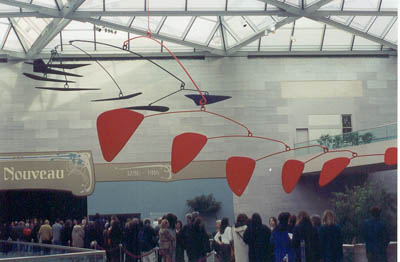
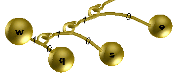

huffmanalgorithm
To avoid a college assignment
The domain name of this website (www.huffmancoding.com) is from my
uncle’s algorithm. In nerd circles, his algorithm is pretty well
known. Often college computer science textbooks will refer to the
algorithm as an example when teaching programming techniques. I wanted
to keep the domain name in the family so I had to pay some domain
squatter for the rights to it.
Back in the early 1950’s, one of my uncle’s professors
challenged him to come up with an algorithm that would calculate the
most efficient way to represent data, minimizing the amount of memory
required to store that information. It is a simple question, but one
without an obvious solution. In fact, my
uncle
took the challenge from his professor to get out of taking the final.
He wasn’t told that no one had solved the problem yet.
I’ve written a simple
program to demonstrate Huffman
Coding in Java. Because I have this web site, several times a year I
receive a frantic e-mail from a college student stating, basically,
“I have a homework assignment to code the Huffman Algorithm and
it is due next week. I am too lazy or clueless to do the work myself,
so can you just send me the source code so I can pass it off as my
own.” I don’t normally accommodate them, but perhaps this
will help them do their own homework.
A little of bit of background
Computers store information in zeros and ones: binary
“off”s and “on”s. The standard way of storing
characters on a computer is to give each character a sequence of 8 bits
(or “binary digits”) which can be 0’s
or 1’s. This allows for 256 possible characters (because 2 to the
8th power is 256). For example, the letter “A”
is given the unique code of 01000001. Unicode allocates 16 bits per
character and it handles even non-Roman alphabets. It is simply easier
for computers to handle characters when they all are the same size. The
more bits you allow per character the more characters you can support
in your alphabet.
But when you make every character the same size, it can waste space. In
written text, all characters are not created equal. The letter
“e” is pretty common in English text, but rarely does one
see a “Z.” But since it is possible to encounter both in
text, each has to be assigned a unique sequence of bits. But if
“e” was a 7-bit sequence and “Z” was 9 bits
then, on average, a message would be slightly smaller than otherwise
because there would be more short sequences than long sequences. You
could compound the savings by adjusting the size of every character and
by more than 1 bit.
Even before computers, Samuel Morse took this into account when
assigning letters to his code. The very common letter “E”
is the short sequence of “·” and the uncommon letter
“Q” is the longer sequence of “— —
· —.” He came up with Morse code by looking at the
natural distribution of letters in the English alphabet and guessing
from there. Morse code isn’t perfect because some common letters
have longer codes than less common ones. For example the letter
“O,” which is a long “— — —,”
is more common than the letter “I,” which is the shorter
code “· ·.” If these two assignments where
swapped, then it would be slightly quicker, on average, to transmit
Morse code. Huffman Coding is a methodical way for determining how to
best assign zeros and ones. It was one of the first algorithms for the
computer age. By the way, Morse code is not really a binary code
because it puts pauses between letters and words. If we were to put
some bits between each letter to represent pauses, it wouldn’t
result in the shortest messages possible.
This adjusting of the codes is called compression and sometimes the
computational effort in compressing data (for storage) and later
uncompressing it (for use) is worth the trouble. The more space a text
file takes up makes it slower to transmit from one computer to another.
Other types of files, which have even more variability than the English
language, compress even better than text. Uncompressed sound (.WAV) and
image (.BMP) files are usually at least ten times as big as their
compressed equivalents (.MP3 and .JPG respectively). Web pages would
take ten times as long to download if we didn't take advantage of data
compression. Fax pages would take longer to transmit. You get the idea.
All of these compressed formats take advantage of Huffman Coding.
Again, the trick is to choose a short sequence of bits for representing
common items (letters, sounds, colors, whatever) and a longer sequence
for the items that are encountered less often. When you average
everything out, a message will require less space if you come up with
good encoding dictionary.
Mixing art and computer science
You cannot just start assigning letters to unique sequences of
0’s and 1’s because there is a possibility of ambiguity if
you do not do it right. For example, the four most common letters of
the English alphabet are “E,” “T,”
“O,” and “A.” You cannot just assign 0 to
“E,” 1 to “T,” 00 to “O,” 01 to
“A,” because if you encounter
“…01…” in a message, you could not tell if
the original message contained “A” or the sequence
“ET.” The code for a letter cannot be the same as the front
part of a different letter. To avoid this ambiguity, we need a way of
organizing the letters and their codes that prevents this. A good way
of representing this information is something computer programmers call
a binary tree.
Alexander Calder is an American artist who builds mobiles and really
likes the colors red and black. One of his larger works hangs from the
East building atrium at the National Gallery, but he had made several
similar to it. The mobile hangs from a single point in the middle of a
pole. It slowly sways as the air circulates in the room. On each end of
the pole you’ll see either a weighted paddle or a connection to
the middle of another pole. Similarly, those lower poles have things
hanging off of them too. At the lowest levels, all the poles have
weights on their ends.

Programmers would look at this mobile and think of a binary tree, a
common structure for storing program data. This is because every mobile
pole has exactly two ends. For the sake of this algorithm, one end of
the pole is considered “0” while the end is
“1.” The weights at the ends of the poles will have letters
associated with them. If an inchworm were to travel from the top of the
mobile to a letter, it would walk down multiple poles, sometimes
encountering the “0” and sometimes the “1.” The
sequence of binary digits to the letter ends up corresponding to the
encoding of that letter.
Let us build a mobile
So how do we build that perfectly balanced mobile? The first step of
Huffman Coding is to count the frequency of all the letters in the
text. Sticking with mobile analogy, we need to create a bunch of loose
paddles, each one painted with a letter in the alphabet. The weight of
each paddle is proportional to the number of times that letter appears
in the text. For example, if the letter “q” appears twice,
then its paddle should weight two ounces and the “e” paddle
would weigh 10 ounces if that many “e”s were present. Every
paddle has a loop for hanging.
For our example, lets assume that in our tiny file there were two
“q”, three “w”s, six “s”s, and ten
“e”s.
Now lets prepare some poles. We’ll need one fewer poles than
unique characters. For example, with 4 unique characters we’ll
need 3 poles. One end of each pole is “0” and the other end
is “1.” Each pole will have a hook on both ends for holding
things and a loop in the middle for being hung itself. In my imaginary
world, poles weigh nothing.
Now let us line up all the paddles then find the two lightest of them
and connect them to opposite ends of a pole. In the example below,
”q“ and ”w“ were the lightest (least frequent).
From now on, we’ll consider those two paddles and their pole as
one inseparable thing. The weight of the “q+w” object is
the sum of the two individual paddles. Remember the pole itself weighs
nothing. We’ll put down the object then we’ll repeat the
process. The two lightest things in the room now may be an individual
paddle or possibly a previously connected contraption. In the picture
below, “q+w” (with a weight of 5) and “s” (with
a weight of 6) were the next two lightest objects. Then we are left
with a “q+w+s” (with a weight of 11) and “e”
(with a weight of 10) as the last two groupings. We’ll attach
those two together. We are attaching the poles from the bottom up.
We’ve hooked up the two lightest things until we’ve got
exactly one contraption that contains the weight of the entire text.

So what do we do with this tree?
Now let’s hang up the mobile and admire our handiwork. The
heaviest paddles (like the frequent “e”) will have a
tendency to be nearer to the top because they were added later while to
the lightest paddles (the infrequent “q”) will be at the
bottom because they were grabbed first and connect to pole after pole,
and so forth. In other words, the path from the top to the common
letters will be the shortest binary sequence. The path from the top to
the rare letters at the bottom will be much longer. The code for
“e” is “0”, “s” is
“10”, “w” is “111” and
“q” is “110.” We have built a Huffman Coding
tree.
To finish compressing the file, we need to go back and re-read the
file. This time, instead of just counting the characters, we’ll
lookup, in our tree, each character encountered in the file and write
its sequence of zeros and ones to a new file. Later, when we want to
restore the original file, we’ll read the zeros and ones and use
the tree to decode them back into characters. This implies that when we
must have the tree around at the time we decompressing it. Commonly
this is accomplished by writing the tree structure at the beginning of
the compressed file. This will make the compressed file a little
bigger, but it is a necessary evil. You have to have the secret decoder
ring before you can pass notes in class.
Other ways of squeezing data
Since my uncle devised his coding algorithm, other compression schemes
have come into being. Someone noticed that the distribution of
characters may vary at different spots in the source, for example a lot
of “a”s around the beginning of the file but later there
might be a disproportionate number of “e”s. When that is
the case, it is occasionally worth the effort to adjust how the Huffman
tree hangs while running through the file. One could slice the file
into smaller sections and have different trees for each section. This
is called Adaptive Huffman Coding.
Three other guys (Lempel, Ziv and Welch) realized that certain
sequences of characters can be common, for example the letter
“r” is often followed by the letter “e”, so we
could treat the sequence “re” as just another letter when
assigning codes.
Sometimes it is not necessary to re-create the original source
exactly. For example, with image files the human eye cannot detect
every subtle pixel color difference. The JPEG (“Joint Photography
Expert Group”) format “rounds” similar hues to the
same value then applies the Huffman algorithm to the simplified image.
The MP3 music format uses a similar technique for sound files.
My uncle’s algorithm makes the world a smaller place.